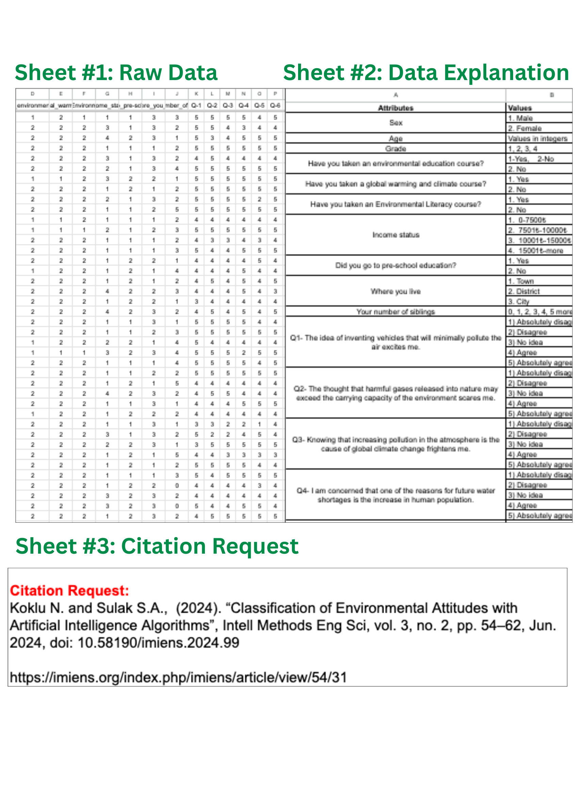
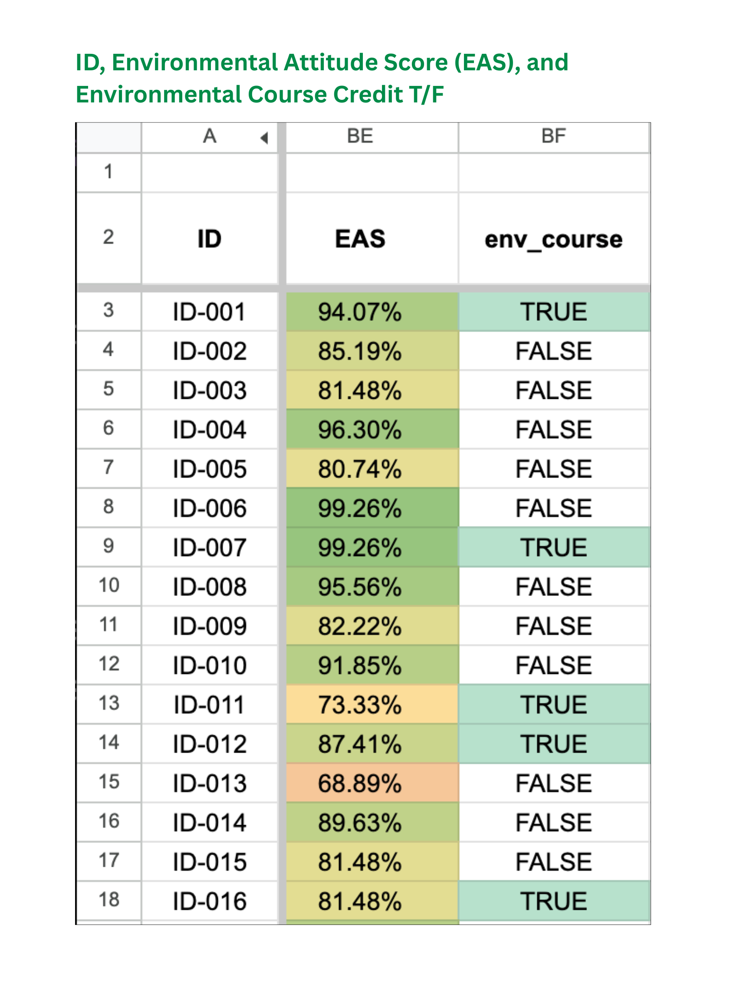
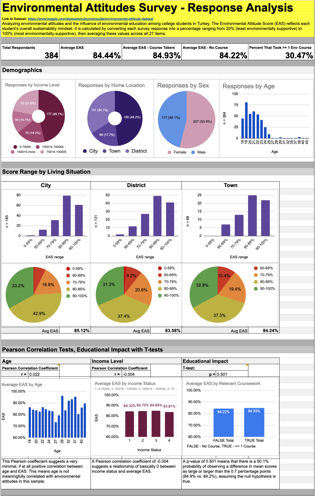
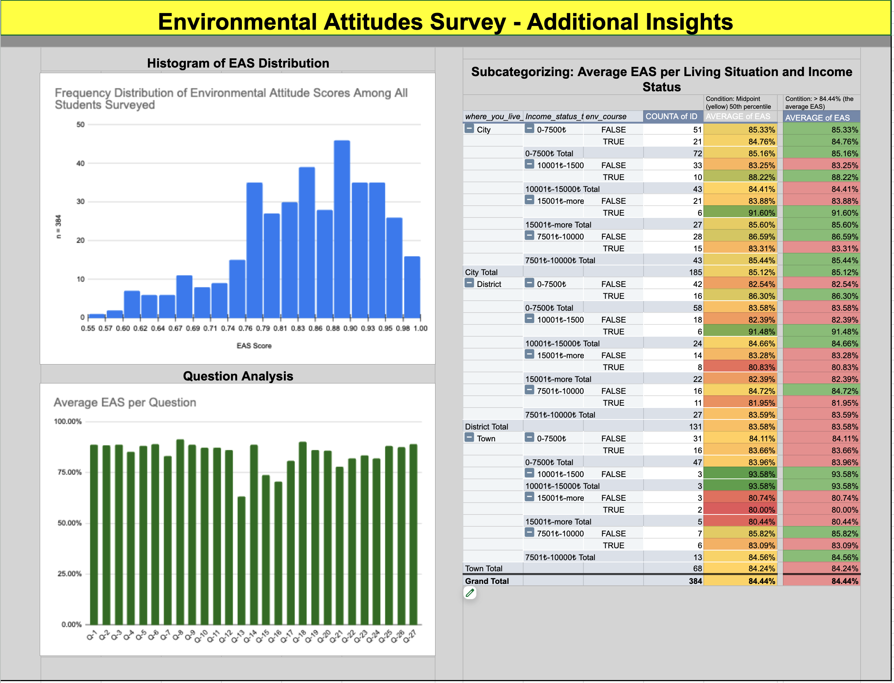

An analysis of 384 college students in Turkey.
As a way to polish my Google Sheets and survey-analysis skills, I decided to dive into some Kaggle data. I have a passion for analyzing data for positive impact, and in a world where environmental challenges are becoming increasingly urgent, the role of environmental, climate, and sustainability-related education is as important as ever. I was intrigued by this particular dataset since it provided everything needed to run a statistical analysis on whether environmental education has an effect on students.
Data Source: Environmental Attitude Dataset (Kaggle)
This project analyzes how students' sustainability mindsets vary across the demographic information provided in the survey, and exposure to environmental or climate-related education. To summarize these responses, I came up with an Environmental Attitude Score (EAS): a comparable score to represent a student's level of positive environmental awareness and sustainability attitudes. I go deeper into what this means and how it's calculated in section 2. The goal of this analysis is to determine which factors available in this survey may correlate with stronger sustainability attitudes among students.
Note: Analysis and visualizations for this project were performed entirely in Google Sheets.
The survey includes 37 total variables from demographic information as well as variables measuring concerns about climate change, resource use, recycling habits, and general environmental awareness.
I imported the raw Kaggle dataset and reviewed its structure. When opening in Google Sheets, it came with three files: a sheet of the raw data containing each user's survey input, a sheet explaining the numeric raw data, and a citation request.
All fields were coded numerically, so I cleaned and transformed the
data using ARRAYFORMULA to convert values into readable
labels (e.g., Yes/No responses, sex, income category, and home
location). Since the dataset did not include participant IDs, I
created a unique ID column to support cleaner referencing.
The survey contained 27 environmental attitude questions with numeric
responses: 1 (absolutely disagree) to 5 (absolutely agree). Of the 27
questions, several were reverse-scored (where a value of 5
represented the least environmentally supportive response). To create
a standardized score for all questions, I applied reverse-coding
using ARRAYFORMULA(6 - column range).

To calculate the Environmental Attitude Score (EAS), I added a header
marker (1) above all properly formatted question columns. I did this
to ensure the next step filters only the properly formatted
questions. I then computed each participant's EAS using a filtered
average, and converted it to a percentage to standardize scores:
=AVERAGE(FILTER(range of scores), (range) = 1)*2/10.
| EAS | Interpretation |
|---|---|
| 0% – 59.99% | Counterintuitive: reflects environmentally harmful or unaware attitudes. Indicates a counterproductive understanding of sustainability issues. |
| 60% – 69.99% | Unsatisfactory: generally neutral attitudes toward environmental behavior. Not ideal for raising sustainability awareness. |
| 70% – 79.99% | Satisfactory: generally supports positive sustainability and environmental attitudes, however there is still room for improvement. |
| 80% – 89.99% | Supportive: reflects deep environmental awareness and good pro-sustainability behaviors. This is the target range for students. |
| 90% – 100% | Exceeds Expectations: reflects outstanding sustainability and climate awareness and behaviors. This is the "poster-child" range where students should want to fall. |
I also created a consolidated variable indicating whether each
respondent had taken any relevant environmental, climate, or
sustainability course. Using
=OR(H3="Yes", J3="Yes", L3="Yes"), I generated a
TRUE/FALSE column that grouped participants into course-takers and
non-takers.

Below is the full environmental attitudes dashboard I created based on the 384 student survey responses. This analysis includes demographic breakdowns, Environmental Attitude Score (EAS) distributions, comparisons by living situation and income level, Pearson correlation tests, and a course-impact T-test evaluating whether prior environmental education is linked to stronger sustainability attitudes.

Below is a screenshot of my Sheets analysis containing additional insights from the dataset. These include a histogram of Environmental Attitude Scores (EAS), pivot-table subcategories (living situation, income level, and environmental course completion), and an average score breakdown for each survey question to identify specific areas where there are gaps in awareness.

Overall, this 384-student dataset shows strong environmental attitudes, with an average Environmental Attitude Score of 84.44%. Most students scored between 80–100%, indicating a generally high level of sustainability awareness within this sample despite most students (about 70%) not having completed an environment/sustainability-related course. Demographic differences were minimal: income level and age showed virtually no correlation with EAS, and while students living in cities scored slightly higher than those in districts or towns by a couple percent, the variation was not statistically meaningful.
Additional insights highlight specific gaps in awareness. The weakest-scoring survey question was Question 13, whether students check for a recycling symbol when buying products. This question had an average score of just 63.33%. This suggests that small, everyday behaviors such as checking labels represent an opportunity for improvement for many students within this sample.
While completing this study, a few limitations were noted:
Despite these limitations, this analysis still provides a clear picture of sustainability attitudes among students. While demographic factors and prior coursework did not have a significant influence, the consistently high EAS across the entire sample suggests that these students generally possess strong environmental awareness already. There are still opportunities for positive impact, and they appear to lie in specific behaviors as seen in lower average scores within certain questions.